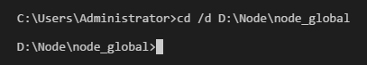
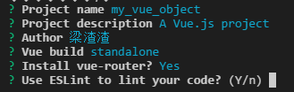
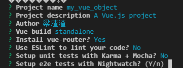
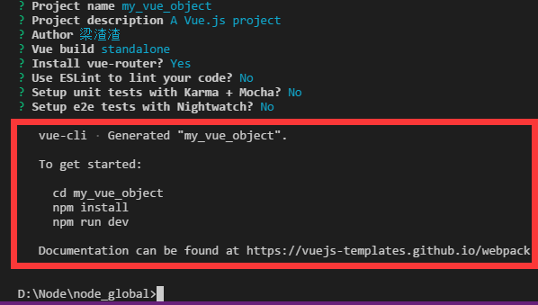
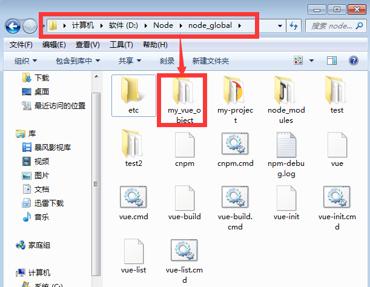
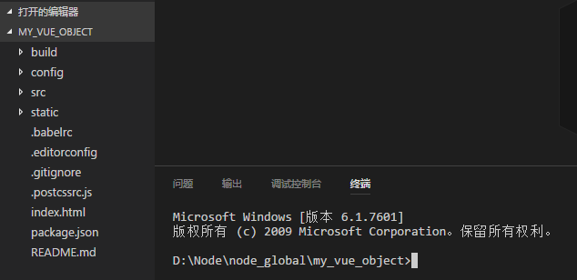
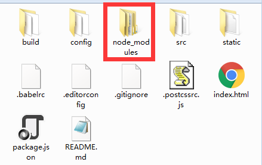
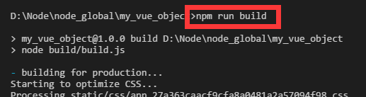
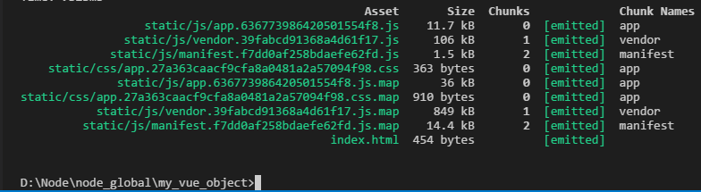
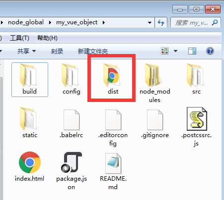

Vue 第一站：从安装到打包
create by jsliang on 2017-05-19
Recently revised in 2019-05-23 19:45:23
大家好，不知不觉又是周五，这周你都做了啥？都学到了啥？尝试让自己更好吧！
OK，直奔主题,这周我们讲讲 Vue 从安装到构建项目：
1、下载安装 Visual Studio Code，这里提供的是官网下载（英文网站，点击右手边的 download 即可）
2、安装 Node.js 并配置环境：
3、安装 Vue：
- 方法一：使用 cmd 的命令行安装（Node.js 安装文章教过你怎么打开了）。
- 方法二：使用 VS Code 的集成终端（道理和 cmd 一样，就是界面比 cmd 好看了点）：


下面一步一步讲解如何安装：
1、全局安装 vue-cli：npm install --global vue-cli

安装完成后可以在 C:\Users\Administrator\AppData\Roaming\npm 目录下（如果你配置了 Node 的文件存放位置，请到 Node 安装目录中找文件
找到安装的文件：

2、创建一个基于webpack模板的新项目：先用命令行 cd /d D:\Node\node_global，切换到你要存放项目的工作空间，然后使用命令行 vue init webpack vueobject 创建项目，vueobject 就是你的名字，下面通过图文讲解我怎么创建一个新的项目的：

（给项目找个存放位置）

（询问你项目名称，默认为（）里面的
my_vue_object，我直接回车）

（询问你项目描述，默认为（）里面的
A Vue.js project，没啥描述，直接回车）

（询问你作者，嗯，梁渣渣）

（询问你使用哪个？可以使用↑↓来选择，它说大多数人用第一个，那就 Enter 第一个吧）

（是否安装
vue-router，这是官方的路由，大多数情况下都使用，就y然后enter吧）
（是否使用
ESLint管理代码，ESLint是个代码风格管理工具，是用来统一代码风格的，并不会影响整体的运行，这也是为了多人协作，新手就不用了，一般项目中都会使用。所以选n并Enter吧）

（是否安装单元测试，Karma 和 Mocha，详细你们去了解吧，这里选择
n）

（是否安装 e2e 测试，这里我还是选择
n）

至此，我们的安装就完成了，打开文件查看下确认是否安装：

接下来我们将 cmd 切换到我们项目所在的位置，或者你将 my_vue_object 文件夹拖到 Visio Studio Code（由于楼主没有安装好，没法直接用右键文件夹用 Visio Studio Code 打开，所以一般都是把文件拖入到 VS Code），并打开集成终端，就可以直接切换到项目所在位置了：

然后我们安装所有的依赖：npm install

（正在安装）

（安装完毕）
可以看到我们的 my_vue_object 文件夹中多了个依赖文件了：

接下来就是打开项目了，你可以使用 VS Code：


或者使用命令行：npm run dev

最终网页展示，至此，我们的项目搭建完成啦！

接下来大致说下打包，打包的命令是：npm run build。当然打包不是直接敲这个命令行就 OK 了。
首先，我们需要找到 config/index.js，修改下路径：

然后，找到 build/build.js，注释掉两句话：

最后，我们在集成终端 cmd 输入 npm run build，它运行后：


可以看到我们的项目文件夹中多了个 dist，说明我们成功了，平时我们需要打开环境才能运行的项目，在这里打包成功了，我们可以直接用浏览器打开了（你可以试下把编辑器关了），在这里我就不演示了。

因为我也是新手，如果你觉得我说得不够透彻，可以看看其他人写的怎么安装vue：》点击前往《
最后我们来个小总结：
在这篇文章中，一些新词我会尽量给你我找到的解释，如果你看到自己不懂的，OK，百度，如果还不懂，OK，再百度。意思就是：没有百度一遍搞不定的，如果有，那就百度两遍！谁都是这么过来的。我写这篇文章，只是给你一个我认为还OK的“捷径”，并不是说，手把手教你从头到尾。
在这里 Vue 的从安装到运行就结束了，如果操作过程有疑惑，然后你百度后还不懂，可以加我 QQ 或者微信询问（我不一定能帮你解决，但我一定是搜索过我的小脑袋瓜帮你解决了）。
谢谢你的阅读，希望你的前端之路更进一步。
—— 梁^_^飘
jsliang的文档库 由 梁峻荣 采用 知识共享 署名-非商业性使用-相同方式共享 4.0 国际 许可协议进行许可。
基于https://github.com/LiangJunrong/document-library上的作品创作。
本许可协议授权之外的使用权限可以从 https://creativecommons.org/licenses/by-nc-sa/2.5/cn/ 处获得。